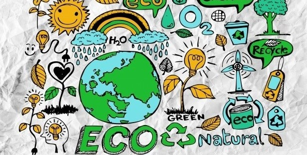
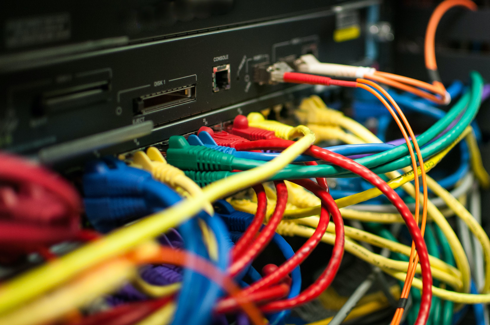

L'aspect ecologique
Petite présentation de l'aspect écologique à propos de la 5G :
L’aspect écologique se place au centre de tous les débats autour de la 5G. C'est même l'une des questions les plus importantes de cette controverse. En effet, bon nombre d’élus de gauche et d’écologistes ont appelé le gouvernement français à ralentir, voire même à stopper, l’étendue de la 5G sur le territoire, afin de pouvoir étudier l’impact qu’aurait cette technologie sur l’environnement. On peut également voir à la télévision ou bien sur les réseaux sociaux le nombre considérable de débats organisés autour de la 5G et de son impact environnemental. D’un côté, certains disent que l'efficacité de la 5G pourrait faire économiser des ressources à la planète, tandis que d’autres expliquent que des facteurs comme le renouvellement des smartphones pourraient faire du déploiement de la 5G une catastrophe écologique.
L'impact environnemental du nouveau réseaux 5G :
 À mesure que la population passe sur le réseau 5G les consommations d’énergie diminueront ou du moins n'augmenteront pas : Selon le secrétaire d’état au numérique Mr Cédric O la 5G,, ”c’est plus de débit, mais moins de consommation énergétique”. Effectivement, bon nombre de chercheurs et d’études récentes affirment que les Joules par bit et le coût par bit devront baisser d'au moins 100 fois. Ils affirment aussi que le spectre mm-Wave utilisé pour la 5G sera compris entre 10 et 100 fois moins cher par Hertz que le spectre 3G et 4G en dessous de 3 GHz [5], « à nombre d’octets équivalents, la 5G est plus efficace que la 4G (…) l’optimisation étique pourra prendre en compte les pics capacitaires : la nuit, la puissance du réseau pourra être réduite. », nous explique Pierre Fortier (vice-président de Capgemini Invent)[6], ce qui implique que la nuit, les antennes pourront ne pas tourner afin de ne plus consommer. De même, les nouvelles petites cellules devraient être de 10 à 100 fois moins chères et plus économes en énergie. Les entreprises pourraient également profiter de la 5G pour moins consommer, par exemple dans le secteur de l’agriculture, la 5G permettrait aux agriculteurs d’avoir l’information du niveau d’humidité des sols très précis, afin d’arroser seulement ce qui convient et donc éviter le gâchis d’eau.
Néanmoins, même si la 5G est moins énergivore, cela ne signifie pas que cette technologie n’a pas d’impact sur l’environnement. Les antennes Mi MO sont par ailleurs au cœur du débat sur la controverse environnementale du déploiement de la 5G. Ces antennes permettraient de cibler les fréquences radio vers l’utilisateur et ses appareils connecté directement, contrairement aux anciennes antennes qui elles, émettent des fréquences rayonnantes même si elles ne sont pas demandées par des récepteurs. Le déploiement de la 5G conclura donc à la densification d'antenne sur les territoires, en l’occurrence plus de 10500 antennes Mi Mo d’après l’ARCEP, car plus une fréquence radio est élevée et moins elle porte loin. De plus, l’opérateur français “Orange” a reconnu que les antennes Mi MO, nécessaires au déploiement de la 5G, sont 4 à 5 fois plus consommatrices que les antennes 4G. La 5G peut permettre la connexion ciblée des objets du quotidien (beamforming)[2] en émettant un rayonnement puissant, qui augmente considérablement notre empreinte numérique. En outre, l’avènement de la 5G provoquera l’obsolescence prématurée de milliards de smartphones 4G dans le monde qui ne seront pas compatibles 5G. Or la fabrication de smartphones a réellement un impact direct négative sur l’environnement. D’après monsieur Hugues Ferreboeuf [3], 81% des impacts environnementaux du numérique en France, est dû aux smartphones, non seulement à cause de leur émission de CO2 et de leurs rejets toxiques plutôt élevés, mais aussi parce qu'ils épuisent certaine ressource. En effet avant d’arriver dans votre poche, votre smartphone a surement fait plusieurs tours du monde. La conception de votre smartphone se fait à un endroit, l'extraction et la transformation des matières premières se fait ailleurs, la fabrication des composants se fait encore ailleurs, de même que l'assemblage, Et, il faut ensuite les distribuer partout dans le monde. Les experts prévoient une augmentation de 15% des ventes pour le passage à la 5G.
Bilan :
Il y a de plus en plus de sociétés qui se soucient de l’impact environnemental de la 5G comme par exemple Bouygues télécom en France qui vient de lancer une application mobile (Mon empreinte smartphone) [6] qui analyse la consommation de données de l’utilisateur et calcule l’émission de CO2e pour un numérique plus positif pour la planète ou encore l’entreprise Suédoise de Telecommunication Ericsson qui travaille également sur un cahier des charges “Breaking the Energy Curve” plus écologique qui mènera à la diminution de la consommation énergétique. Malheureusement, les études et les recherches sur l’impact environnemental que pourrait avoir la 5G restent très peu nombreuses, ce qui donne sujet à beaucoup de débats et d’avis différents. Seul l’avenir nous dira si la 5G est vraiment moins consommatrice en énergie que les technologies précédentes.